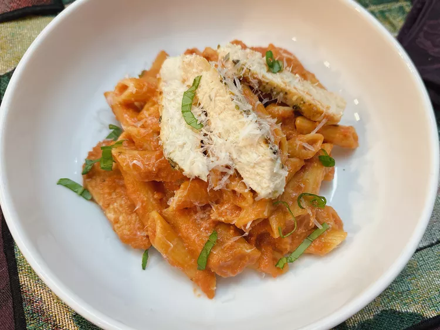

Spicy Chicken Penne

This spicy chicken penne alla vodka is a restaurant-style pasta dish that is also
budget friendly. Most items will likely be in your pantry already, plus it takes
very little time to put together. It'll be on the table in about half an hour.
Ingredients
- 1 pound penne pasta
- 1 tablespoon butter
- 3 skinless, boneless chicken breasts
- 1 teaspoon Italian seasoning, divided
- 1/2 teaspoon salt, divided
- 1 shallot, minced
- 4 cloves garlic, minced
- 1/2 teaspoon crushed red pepper flakes
- 1 (28 ounce) can tomato puree
- 1/2 heavy whipping cream
- 2 tablespoons vodka
- 1/2 cup shredded Parmesan cheese
- 4 leaves basil, cut into very thin strips
Steps
-
Fill a large pot with lightly salted water and brin to a rolling boil. Stir in penne
and return to a boil. Cook pasta uncovered, stirring occasionally, until tender yet
firm to the bite, about 11 minutes.
-
Meanwhile, in a deep cast iron skillet, melt butter over medium heat. Sprinkle
chicken with 1/2 teaspoon Italian seasoning and 1/4 teaspoon
salt.
Set
remaining seasoning aside.
-
Add chicken to the skillet. Cook until chicken is no longer pink in the center and
the juices run clear, about 5 minutes per side. An instant-read thermometer
inserted into the center should read at least 165 degrees F (74 degrees C).
Remove chicken to a cutting board; keep warm.
-
Slice chicken into thin strips; and add to the skillet. Drain pasta; reserving 1/2
cup pasta water.
-
Add the pasta to the skillet. Toss to combine. If sauce seems too thick, add in
pasta water 1 tablespoon at a time until desired consistency is reached. Sprinkle
penne with julienned basil. Serve immediately.